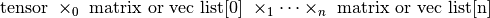

tensorly.tenalg.multi_mode_dot
-
multi_mode_dot(tensor, matrix_or_vec_list, modes=None, skip=None, transpose=False)[source] n-mode product of a tensor and several matrices or vectors over several modes
Parameters: tensor : ndarray
matrix_or_vec_list : list of matrices or vectors of lengh
tensor.ndimskip : None or int, optional, default is None
if not None, index of a matrix to skip Note that in any case, modes, if provided, should have a lengh of
tensor.ndimmodes : None or int list, optional, default is None
transpose : bool, optional, default is False
if True, the matrices or vectors in in the list are transposed
Returns: ndarray
tensor times each matrix or vector in the list at mode mode
See also
Notes
If no modes are specified, just assumes there is one matrix or vector per mode and returns:
